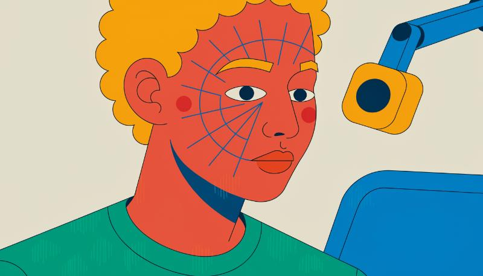

![NTK]()

Utah Cleared Nolla Health to Prescribe Drugs Without a Doctor's Signature. Utah's Office of Artificial Intelligence Policy announced Monday that Nolla Health can evaluate patients for mild-to-moderate acne using a structured intake form and photos of their skin, then decide whether to prescribe one of a list of low-risk drugs (STAT News). For now a licensed clinician still signs off on each prescription. The state built in an off-ramp for that too: Nolla may eventually prescribe without any human review at all (STAT News). Nolla raised $4.5 million last year from investors including General Catalyst, and the company has said acne is just the opening act. It wants its AI directing treatment for a wider range of conditions (STAT News).
That ambition only makes sense because of the program underneath it. Nolla's pilot sits inside Utah's AI sandbox, a system that lets the state's AI policy office waive ordinary regulations for companies willing to test products under its supervision. The state didn't slow down after approving Nolla. It expanded the sandbox the same day, adding new pilots aimed at prescriptions and women's health, and announced it will require third-party audits of company claims going forward (STAT News). That audit requirement is the state answering its own critics before they finish the sentence: who checks the AI's work once the doctor stops.
The sandbox model treats medicine the way other states treat ride-sharing apps or delivery drones: launch first, regulate as problems surface. Acne is about as low-stakes a condition as exists in dermatology, which is exactly why it was chosen to go first. The company that gets this right becomes the template every other state copies. The company that gets it wrong becomes the cautionary tale in someone else's legislative hearing.
The acne pilot is the opening move. The next ninety days decide whether anyone else gets to write the rules.
Nolla Health Will Ask Utah to Drop the Clinician Sign-Off Within Months, Not Years. The company built its business model on treating acne as proof of concept, not the product. Nolla will almost certainly petition Utah's AI policy office to remove the human review step once it has a batch of clean outcomes to point to, likely before the end of this sandbox cycle. The state already wrote the exit ramp into the original approval, which means the only open question is timing. Watch for Nolla to cite prescription volume and low complication rates as its case, the same argument ride-share companies once made about driver background checks: the data looks fine until the one case that isn't.
That timeline only moves as fast as the audit system can keep up, which is where the second pressure point sits.
The Third-Party Auditors Utah Promised Will Almost Certainly Be Chosen by the Companies They're Auditing, Not the State. Utah's AI policy office said it would require outside audits of company claims, but it has not yet named who performs them or who pays for them. The most likely outcome, based on how sandbox programs in other industries have run, is an auditor selected and compensated by Nolla and the pilots behind it. That arrangement has a name in every other regulated industry: the fox hires the inspector. Within the next two weeks, expect the state to release, or decline to release, a list of approved auditing firms. If that list doesn't exist yet, the audit requirement is a press release wearing a policy's clothes.
Nolla aspires to direct treatment for a host of conditions using AI.
STAT News, Oct. 5 reporting on Nolla Health's stated ambitionsThe women's health pilots Utah announced the same day will almost certainly draw the sharpest scrutiny of the three tracks, and for a structural reason: acne has no analog to a missed ectopic pregnancy or a misread fertility hormone panel. A dermatology error is visible and slow. A reproductive health error can be neither. The office that approved Nolla in a single announcement, bundled with two other categories, will likely face its first serious legislative pushback not over acne but over whatever the women's health pilot turns out to diagnose. Utah's legislature reconvenes in January, and any hearing on the sandbox program will almost certainly happen before then in committee, where the state can control the story before it becomes one. The company and the office that move fastest to get ahead of that hearing, not the one that waits to be asked, is the one still standing when other states start calling to copy the model, or to avoid it.
Walk through the door Utah already opened and the next room is bigger than acne, and it has a copy-paste button.
Other States' AI Policy Offices Will Copy Utah's Sandbox Language by Name, Not Just Its Concept. Utah didn't just approve Nolla. It built a reusable legal object: a sandbox waiver plus a third-party audit requirement, bundled together and announced in a single release. That packaging is new. Most states still treat AI medical devices case by case, through whatever board already regulates the underlying drug or device. Utah just proved a state can wave through diagnosis, prescription and audit in one document, dated and public, that another state's legislative counsel can lift almost verbatim. Arizona and Texas both run AI sandboxes for other industries already, financial services and insurance, which means the legal scaffolding exists in those statehouses before anyone writes a word about medicine. The combination that wasn't reachable last month is a dermatology AI company with a funded track record, sitting next to a named audit requirement a lawmaker can point to and say "we won't be the first." Utah just became the first state's homework.
That copying only accelerates if Nolla's clinician sign-off actually comes off on schedule, which is the door this first one opens.
A Second Condition Category Could Ride Into the Sandbox Behind Nolla's Audit Results, Not Behind Its Own. Utah named women's health pilots the same day it named Nolla, but it has not yet said which specific conditions those pilots will cover. The audit firm Utah eventually names for Nolla, once it exists, becomes a reusable asset. A state that has already vetted one AI-prescribing auditor doesn't need to vet a second one from scratch. It needs the first auditor willing to expand its scope. That's a much smaller ask than building new oversight infrastructure, and it's exactly the kind of move a cash-strapped state AI office would take. The risk compounds precisely because dermatology and fertility hormone panels have nothing in common clinically. An auditor who learned to check acne photos and drug interaction lists is not automatically qualified to check an ovulation prediction model, but the bureaucratic path of least resistance treats them as the same job. The second door only opens because the first one got propped open with an auditor already on the state's payroll.
There's a narrower version of this story that doesn't end in a bigger mess, and it's worth naming because it's genuinely sitting there too.
Utah's Legislature Could Turn the January Hearing Into the First Real Template for AI Medical Oversight, Not Just a Post-Mortem. A hearing forced early, before a bad outcome rather than after one, is a door that rarely opens in American regulation. Utah's legislature reconvening before any documented harm from Nolla means lawmakers could write prescriptive audit standards into law while the stakes are still a missed pimple cream, not a missed diagnosis. That requires the audit list to exist and be public before the hearing, and it requires a legislator willing to spend political capital on a problem that hasn't hurt anyone yet. Both conditions are unusual. Neither is impossible, and Utah, for better or worse, has already shown it moves faster than most states when an industry asks it to.
Nolla's own founders are selling a story about what this pilot proves, and it's worth checking against what Utah actually approved.
Nolla Health Is Calling This "AI-Powered Dermatology Care," Not an Unsupervised Prescription Pilot. The company's public framing, echoed in coverage of its funding round, is that trained clinicians remain central to how patients get treated. That framing answers a real fear. Patients worry a bot will misdiagnose them and nobody will be accountable. Nolla's marketing promises the opposite: a clinician in the loop, a safety net under the algorithm. But Utah's own announcement says the clinician sign-off is a temporary stage, not a permanent feature, and the state built the mechanism for removing it before the pilot even started (STAT News). A company can call something "doctor-supervised" right up until the day the doctor is optional, and still be telling the truth in the present tense. That's the mechanism: nothing Nolla says today is false. It's just engineered to expire quietly, the way a teaser interest rate is true for exactly as long as it takes to sign the lease.
Investors benefit from that framing more than patients do. General Catalyst and Nolla's other backers put $4.5 million behind a company whose valuation depends on proving AI can safely replace, not just assist, a licensed prescriber. A story that says "doctors are still involved" sells the pilot to a nervous public and a cautious legislature at the same time it's being built to outgrow that claim. Every month the sign-off stays in place without incident is a month Nolla can point to as evidence the sign-off was never load-bearing in the first place.
In the first stages of the pilot, the decisions of the AI will be reviewed by a licensed clinician who will sign off on prescriptions.
STAT News, Oct. 5, describing Utah's current rule, not Nolla's eventual oneThe sharper version of the lie isn't coming from Nolla. It's coming from Utah's own messaging, which has paired the Nolla approval with a promise of third-party audits as though oversight and automation were arriving in the same package. They aren't. The audit requirement was announced the same day as the expansion, not as a condition that preceded it, and no auditor has been named. A regulator gets to look responsible for requiring a safeguard it hasn't built yet, while the company it's safeguarding against keeps its sandbox license either way. Three decades ago, state banking regulators ran the same play with subprime lenders: announce the consumer protections and the product launch together, let the headline do the reassuring, and let the enforcement arrive, if it arrives, years after the loans are already sold.